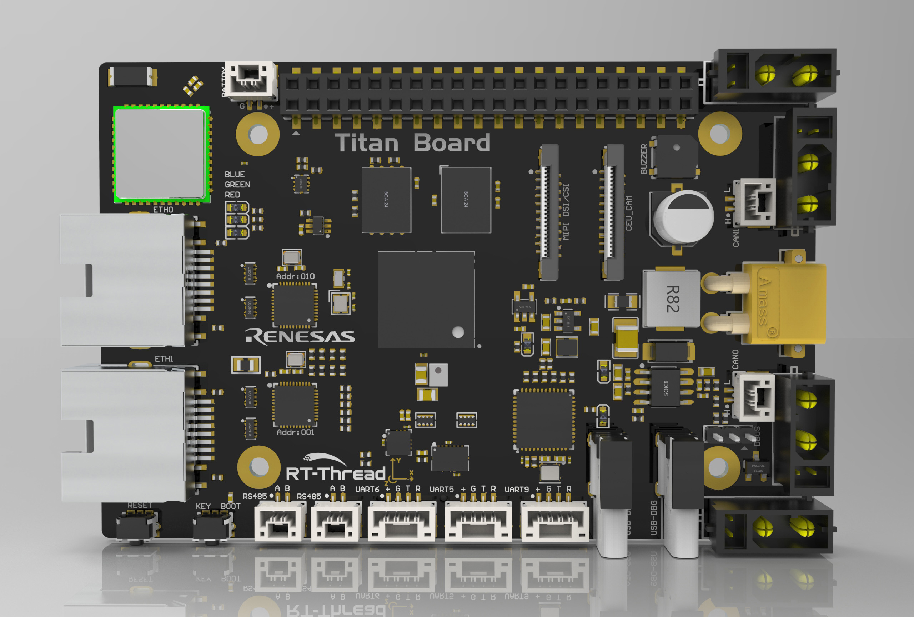
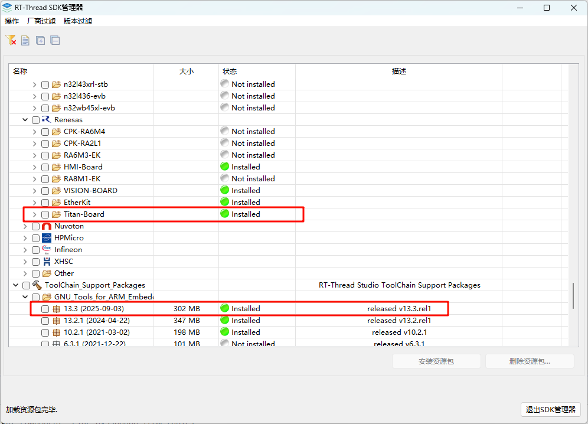
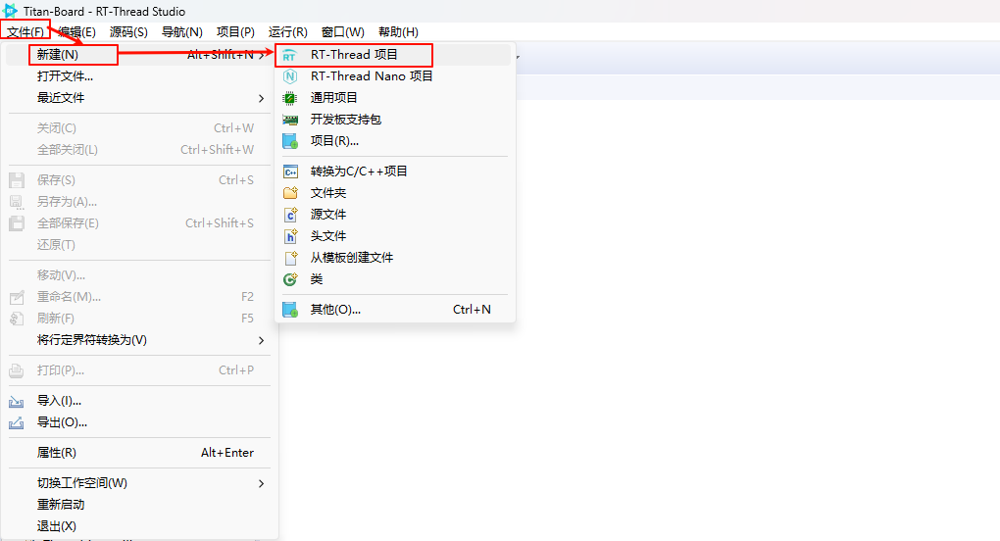
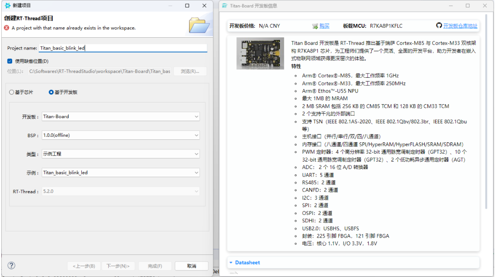
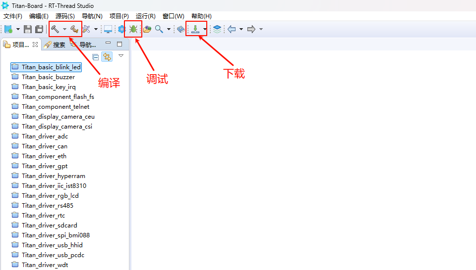
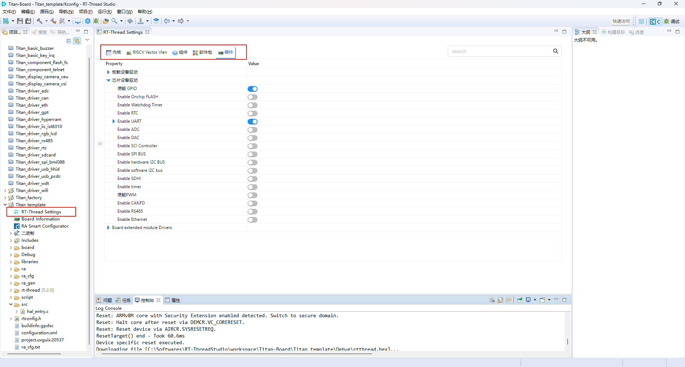

Titan Board BSP 说明
中文 | English
简介
本文档为 RT-Thread Titan Board 开发板提供 BSP (板级支持包) 说明。通过阅读快速上手章节，开发者可以快速地上手该 BSP，将 RT-Thread 运行在开发板上。
主要内容如下：
开发板介绍
BSP 快速上手指南
开发板介绍
基于瑞萨 RA8P1 开发的 Titan Board 开发板，通过灵活配置软件包和 IDE，对嵌入系统应用程序进行开发。
开发板正面外观如下图：

该开发板常用 板载资源 如下：
MCU：R7KA8P1KFLCAC，高性能 1GHz Arm® Cortex®-M85 与 250MHz Arm® Cortex®-M33 双内核，1MB code MRAM 以及 2MB 带 ECC 的 SRAM。
调试接口：板载 DAP-Link 接口
板载接口：40Pin 树莓派接口、MIPI DSI/CSI、CEU Camera、RGB LCD接口、2个以太网接口、4个 CAN 电机接口、2个 RS485接口、3路串口、1个 DBUS 接口、1个 USBHS/USBFS 接口、1个 RTC 电池接口。
外设支持
本 BSP 目前对外设的支持情况如下：
片上外设 |
支持情况 |
组件 |
支持情况 |
|---|---|---|---|
UART |
支持 |
LWIP |
支持 |
GPIO |
支持 |
TCP/UDP |
支持 |
HWTIMER |
支持 |
MQTT |
支持 |
IIC |
支持 |
TFTP |
支持 |
WDT |
支持 |
Telnet |
支持 |
RTC |
支持 |
多核通信 |
支持情况 |
ADC |
支持 |
RPmsg-Lite |
支持 |
DAC |
支持 |
拓展外设 |
支持情况 |
SPI |
支持 |
MIPI CSI Camera |
支持 |
RS485 |
支持 |
CEU Camera |
支持 |
CANFD |
支持 |
RGB LCD |
支持 |
SDHI |
支持 |
CYW43438 WIFI |
支持 |
USB |
支持 |
||
HyperRAM |
支持 |
||
HyperFlash |
支持 |
使用说明
使用说明分为如下两个章节：
快速上手
本章节是为刚接触 RT-Thread 的新手准备的使用说明，遵循简单的步骤即可将 RT-Thread 操作系统运行在该开发板上，看到实验效果。
进阶使用
本章节是为需要在 RT-Thread 操作系统上使用更多开发板资源的开发者准备的。通过使用 FSP 和 RT-Thread Settings 工具对项目进行配置，可以开启更多板载资源，实现更多高级功能。
快速上手
本 BSP 目前提供 RT-Thread Studio 工程。下面以 RT-Thread Studio 开发环境为例，介绍如何将系统运行起来。
创建工程
下载 Titan Board 资源包、GNU_Tools_for_ARM_Embedded_Processors v13.3。

新建 RT-Thread 项目


硬件连接
使用 USB 数据线连接开发板到 PC，使用 DAP-Link 接口下载和 DEBUG 程序。
编译下载

查看运行结果
下载程序成功之后，系统会自动运行并打印系统信息。
连接开发板对应串口到 PC , 在终端工具里打开相应的串口（115200-8-1-N），复位设备后，可以看到 RT-Thread 的输出信息。输入 help 命令可查看系统中支持的命令。
\ | /
- RT - Thread Operating System
/ | \ 5.2.0 build Aug 5 2025 17:24:30
2006 - 2024 Copyright by RT-Thread team
==================================================
Hello, Titan Board!
==================================================
msh >ps
thread pri status sp stack size max used left tick error tcb addr
------------ --- ------- ---------- ---------- ------ ---------- ------- ----------
tshell 20 running 0x000000cc 0x00001000 16% 0x0000000a OK 0x22022568
sys workq 23 suspend 0x000000c4 0x00000800 11% 0x0000000a OK 0x22021a60
tidle0 31 ready 0x000000a4 0x00000100 67% 0x00000011 OK 0x220203c8
timer 4 suspend 0x000000a4 0x00000200 38% 0x00000009 EINTRPT 0x22020818
main 10 suspend 0x000000dc 0x00000800 18% 0x00000007 EINTRPT 0x22021128
msh >
应用入口函数
应用层的入口函数在 src\hal_entry.c 中 的 void hal_entry(void) 。用户编写的源文件可直接放在 src 目录下。
void hal_entry(void)
{
rt_kprintf("\n==================================================\n");
rt_kprintf("Hello, Titan Board!\n");
rt_kprintf("==================================================\n");
while (1)
{
rt_pin_write(LED_PIN_0, PIN_HIGH);
rt_thread_mdelay(1000);
rt_pin_write(LED_PIN_0, PIN_LOW);
rt_thread_mdelay(1000);
}
}
进阶使用
资料及文档
FSP 配置
需要修改瑞萨的 BSP 外设配置或添加新的外设端口，需要用到瑞萨的 RA 可扩展性强的配置软件包 (FSP) 配置工具。请务必按照如下步骤完成配置。配置中有任何问题可到 RT-Thread 社区论坛 中提问。
下载灵活配置软件包 (FSP) | Renesas，请使用 FSP 6.0.0 版本
请参考文档：RA系列使用FSP配置外设驱动。
RT-Thread Settings
在 RT-Thread Settings 中可以对 RT-Thread 的内核、组件、软件包以及 Titan Board 的设备驱动进行配置。

联系人信息
在使用过程中若您有任何的想法和建议，建议您通过以下方式来联系到我们 RT-Thread 社区论坛
贡献代码
如果您对 Titan Board 感兴趣，并且有一些好玩的项目愿意与大家分享的话欢迎给我们贡献代码，您可以参考 如何向 RT-Thread 代码贡献。